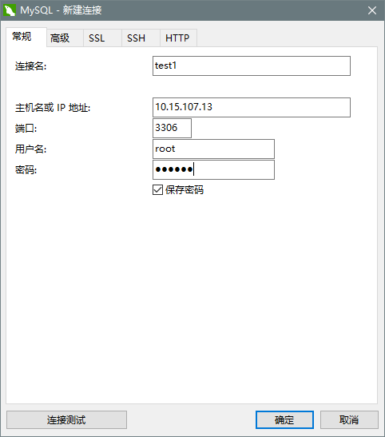

MySQL基础
熟练掌握MySQL的安装及基础使用
在Ubuntu16.04下安装MySQL
首先执行下面三条命令：
sudo apt-get install mysql-server sudo apt install mysql-client sudo apt install libmysqlclient-dev安装成功后可以通过下面的命令测试是否安装成功
sudo netstat -tap | grep mysql出现如下信息证明安装成功
tcp6 0 0 [::]:mysql [::]:* LISTEN 1123/mysqld可以通过如下命令进入mysql服务
mysql -uroot -p你的密码设置mysql允许远程访问
sudo vi /etc/mysql/mysql.conf.d/mysqld.cnf 注释掉bind-address = 127.0.0.1：保存退出，然后进入mysql服务，执行授权命令
grant all on *.* to root@'%' identified by '123456' with grant option; 刷新生效，否则就要重启MySQL服务才可以 flush privileges;然后执行quit命令退出mysql服务，执行如下命令重启mysql
service mysql restart
在windows下可以使用navicat远程连接ubuntu下的mysql服务

- 连接名：自己定义
- 主机名或IP地址：写自己Ubuntu的ip地址
- 端口：3306
- 用户名：写自己Ubuntu中MySQL的用户名
密码：写自己Ubuntu中MySQL的密码
可能出现的错误
Ubuntu中更新软件时经常会碰到一个问题： E: 无法获得锁 /var/cache/apt/archives/lock - open (11 资源临时不可用) E: 无法对下载目录加锁 造成该问题的原因是系统中只允许有一个apt-get进程，当前的锁已经被占用了。 我们可以关掉当前的apt-get进程后，再执行我们自己的操作。 解决方案一： 先执行命令ps aux | grep apt-get，找出当前的apt-get进行，然后kill掉该进程。 解决方案二： 直接rm rm /var/cache/apt/archives/lock 和 rm /var/lib/dpkg/lock。
Ubuntu16.04完全卸载Mysql 5.7
sudo apt purge mysql-* sudo rm -rf /etc/mysql/ /var/lib/mysql sudo apt autoremove